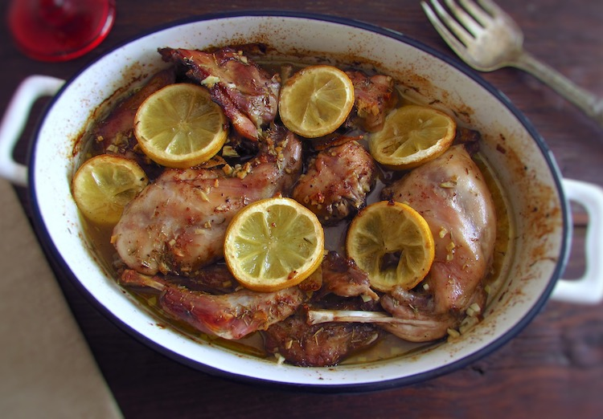

Back to Home
Lemony Rabbit

This delicious recipe will leave your mouth watering and your guests craving more!
Description
This recipe throws the traditional way of cooking Rabbit out the window. Instead of stewing it, we are slow cooking
it in the oven with a delicious lemony sauce. The result is a tender, juicy, and flavorful dish that will leave you
wanting more.
Ingredients
- 2 Rabbits
- Roughly 1 Rabbit per Serving
- 1 Lemon
- Lemon Juice is Acceptable
- 1 Onion, Diced
- Salt
- Pepper
- Water
Steps
- Pre Heat Oven to 350 Degrees
- Place Rabbit Pieces into Suitably Sized Oven-Safe Cookware
- Season Rabbit with Salt and Pepper
- Place Diced Onion on Top of Rabbit
- Squeeze Lemon Juice Over Rabbit
-
Add Water to the Cookware
- Enough to Cover the Bottom of the Cookware
- Cover Cookware with Lid or Foil
- Place Cookware in Oven and Cook for 2 Hours
- Remove Cookware from Oven and Serve
- Enjoy!